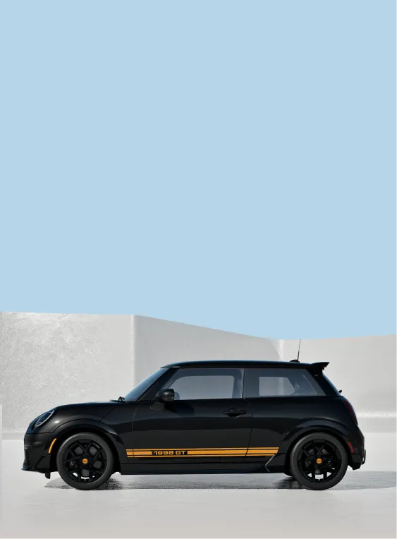
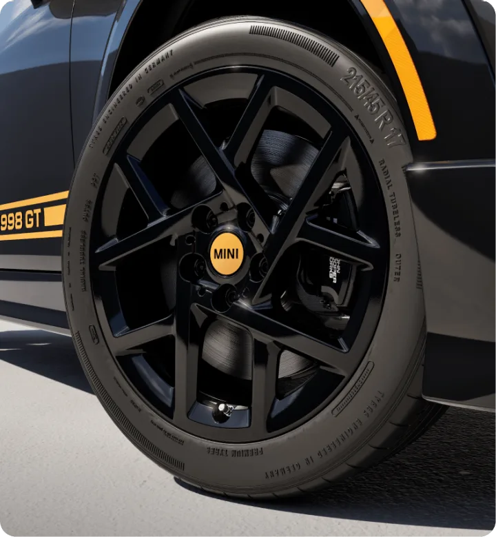
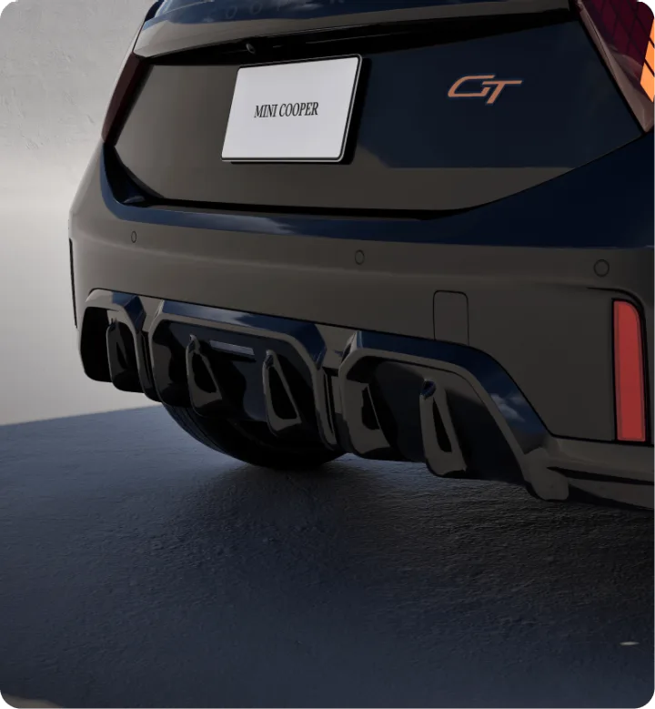
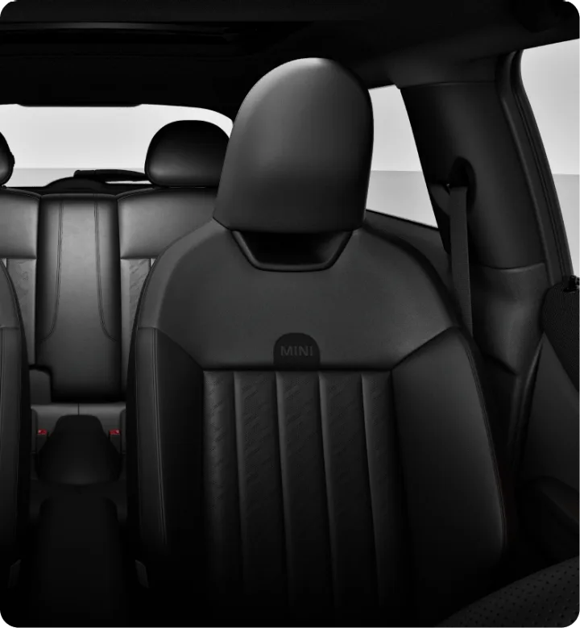
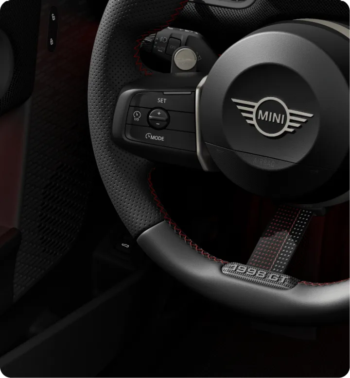

▲ MINI 1998 GT 에디션. 사이드 데칼에 새겨진 '1998 GT' 배지가 이름의 정체를 보여준다. 사진=MINI USA
'1998'은 연식이 아니다, 엔진 배기량이다
MINI가 새 한정판 '1998 GT 에디션'을 공개했다. 이름만 보면 1998년식 헤리티지 모델처럼 보이지만, 실제로는 숫자 그대로 1,998cc 배기량의 2.0리터 터보 엔진을 뜻하는 이름이다. Motor1은 이 차를 두고 "쿠퍼S보다 비싸지만 출력 대신 핸들링을 택했다"고 평했다. Motor1 원문에서 확인 가능
이런 '배기량 이름표'는 MINI가 처음 쓰는 방식이 아니다. BMWBlog에 따르면 1998 GT는 1969년 오리지널 미니의 '1275 GT'(1,275cc A시리즈 엔진 탑재)와 2020년의 '1499 GT'(1,499cc 엔진)를 잇는 세 번째 GT다. 두 모델 모두 최고출력보다 배기량 자체를 이름에 새겨 넣었고, 성격 역시 스트레이트라인 가속보다 '그랜드 투어링'과 손맛에 방점을 찍었던 차들이다. 1998 GT는 이 계보를 반세기 넘게 그대로 잇는 셈이다.
공식 판매 채널에서는 MINI USA가 진행 중인 8부작 한정판 시리즈 '아이콘 드롭(Icon Drop)'의 여섯 번째(Drop 06 of 08) 모델로 소개된다. 특정 시즌에만 제한 수량으로 풀리는 시리즈여서, 정규 라인업처럼 상시 주문할 수 있는 차는 아니다.
디자인: 미드나이트 블랙에 오렌지 포인트

▲ 17인치 JCW 스프린트 스포크 블랙 휠과 오렌지 센터캡. 사이드 스커트에도 '1998 GT' 데칼이 새겨졌다. 사진=MINI USA
외관은 2도어 해치백 단일 차체로만 나온다. 색상은 미드나이트 블랙 메탈릭 단일 옵션에 오렌지 컬러 포인트를 더한 조합으로, 사이드 데칼과 C필러 배지, 리어 데칼까지 전부 '1998 GT' 각인이 들어간다. 휠은 17인치 JCW 스프린트 스포크 블랙 휠을 신었다.

▲ JCW 리어 윙렛과 쿼드 머플러 팁이 적용된 리어 범퍼. 'GT' 배지가 트렁크에 자리 잡았다. 사진=MINI USA
바디킷은 JCW 프론트·사이드·리어 윙렛으로 구성돼 순정 쿠퍼보다 훨씬 공격적인 인상을 준다. 실내는 블랙 베신 소재에 블랙 니트를 조합한 JCW 스포츠 시트, '1998 GT' 각인이 들어간 3본 스포크 열선 스티어링 휠, 전용 플로어매트와 도어 실, 키 포브 커버, 미코 박스까지 GT 전용 사양으로 채워졌다.

▲ JCW 스포츠 시트. 뒷좌석까지 동일한 블랙 소재로 통일했다. 사진=MINI USA
핸들링 세팅: JCW 서스펜션은 통째로, 엔진은 그대로

▲ 림 하단에 '1998 GT' 스티칭이 들어간 3본 스포크 열선 스티어링 휠과 패들 시프터. 사진=MINI USA
1998 GT의 가장 독특한 지점은 파워트레인이다. 차체 밑바탕은 쿠퍼C 2도어이며, 엔진도 쿠퍼C와 동일한 터보 2.0리터 4기통(161마력, 최대토크 184lb-ft)을 그대로 쓴다. 즉 출력은 손대지 않았다. 대신 JCW 서스펜션과 브레이크, 패들 시프터가 달린 7단 스포츠 변속기를 통째로 얹었다. 엔진은 순한 채로 두고 하체와 제동만 고성능 사양으로 바꾼 조합인 셈이다.
Motor1은 이 세팅을 두고 "조향과 차체 제어에 민감한 마니아들을 겨냥한 선택이며, JCW 하드웨어가 실제로 일상에서 체감되는 업그레이드인지가 이 차의 성패를 가를 것"이라고 평가했다. 출력 숫자를 올리는 대신 코너를 도는 감각 자체를 바꾸겠다는 접근이다.
쿠퍼S보다 비싼데, 마력은 낮다
가격표를 보면 이 차의 포지셔닝이 더 뚜렷해진다. 1998 GT는 미국 기준 목적지 비용을 포함해 38,225달러로 책정됐다. 이는 더 강력한 엔진을 얹은 쿠퍼S 2도어 기본가보다 4,075달러 더 비싼 가격이다. 즉 소비자는 출력이 더 낮은 차에 더 많은 돈을 지불해야 한다.
MINI USA 공식 페이지 기준으로는 시작가 36,875달러(목적지 비용 1,350달러 별도)로 표기돼 있어 매체별로 제시한 최종가에 약간의 차이가 있지만, '쿠퍼S보다 비싸다'는 결론은 동일하다. Jalopnik은 이를 두고 "1990년대와는 아무 관련이 없는 이름이지만, JCW 브레이크와 룩만큼은 확실히 챙겼다"고 짚었다. 결국 1998 GT가 파는 것은 마력이 아니라 서스펜션 세팅과 브랜드 헤리티지, 희소성이라는 뜻이다.
한정 생산과 글로벌 출시 계획
1998 GT는 제한 수량으로만 생산되며, 정확한 생산 대수는 별도로 공개되지 않았다. 미국 시장 출시 시점은 2026년 가을로 예고됐고, 아이콘 드롭 시리즈의 특성상 정규 라인업처럼 상시 판매되는 차는 아니다.
아직 한국을 포함한 다른 시장으로의 공식 출시 계획은 확인되지 않았다. 앞서 MINI 코리아가 150대 한정으로 들여온 쿠퍼 폴 스미스 에디션처럼, 아이콘 드롭 라인업 역시 시장별로 선별 도입되는 경우가 많아 국내 상륙 여부는 향후 MINI 코리아의 발표를 지켜봐야 한다.